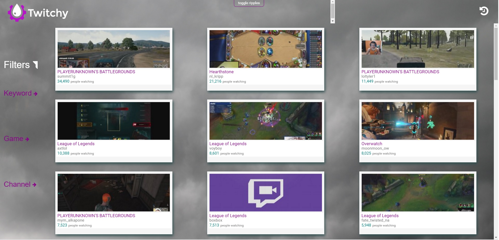
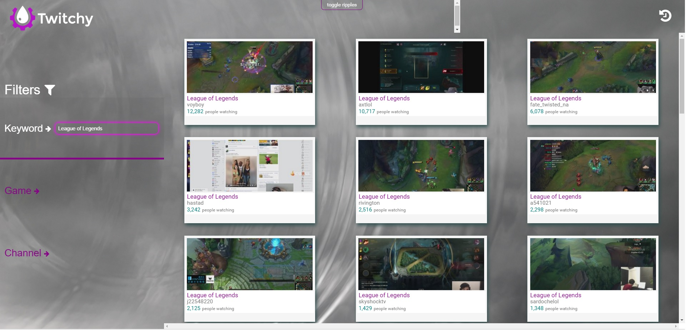
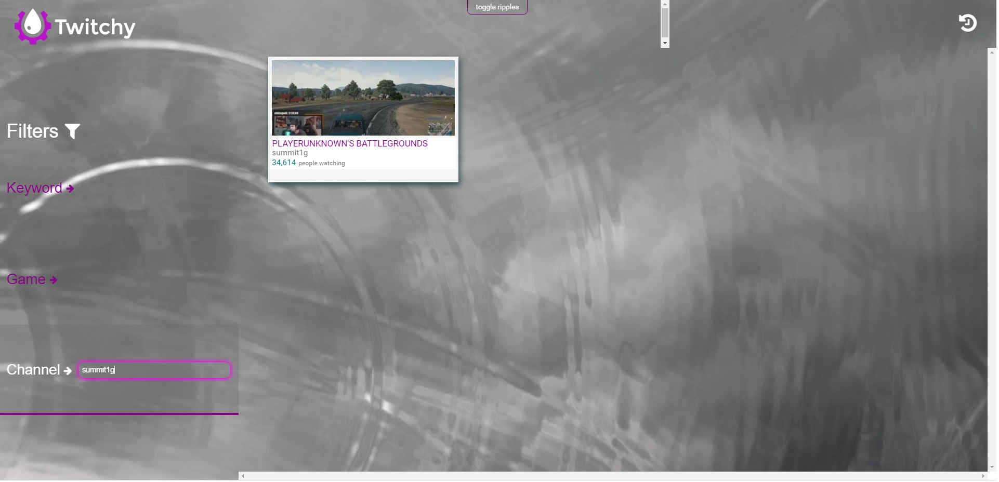
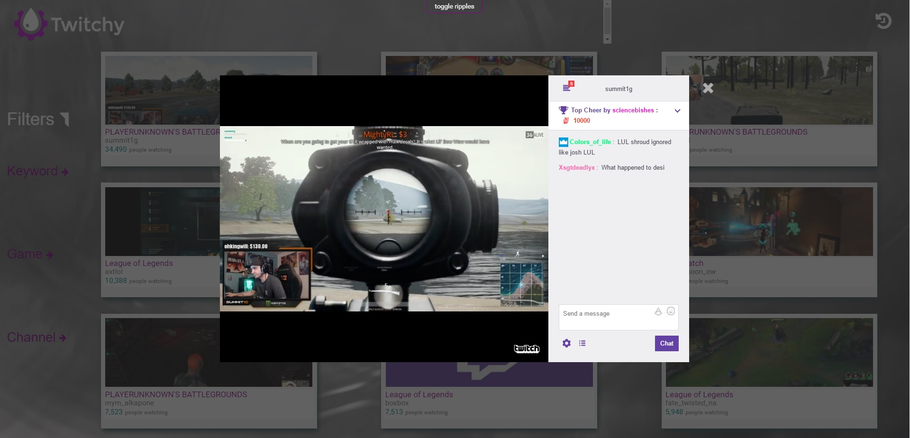
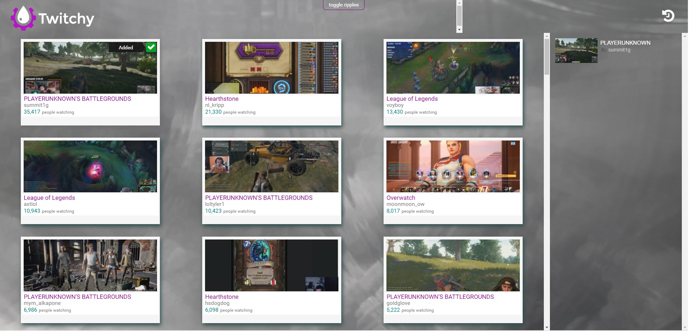

Goal: The purpose of the creation of Twitchy is to offer an alternative live streaming experience using the Twitch.tv API which allows us to retrieve all of the live streams currently on Twitch.tv at any given time. Twitchy is a lightweight solution unlike Twitch.tv so there are no back-end processes running while browsing the website, thus making the experience very fast and enjoyable, however this is not a clone of Twitch.tv, we are simply using the API given to us by Twitch.tv and taking the core concept of Twitch and realizing it in the simplest form.
Front-end: HTML/CSS/jQuery
Back-end: AJAX/Java Servlet
The main page upon loading, loads 36 streams in ranking of popularity currently live from Twitch.tv , if you scroll to the bottom more livestreams would load, infinite scrolling
Searching for a live stream by game name, I searched the game "League of Legends" and all live streamers playing "League of Legends" on Twitch.tv would pop up from most popular to least popular
Searching for a live stream by channel name, I searched the channel "summit1g" and his live stream came up
Actually opening a live stream, using the Twitch API
Adding a livestream to the "Watch Later Tab", which is implemented using cookies, persistent data. Can come back after page refresh or close browser and go to corresponding added stream.
